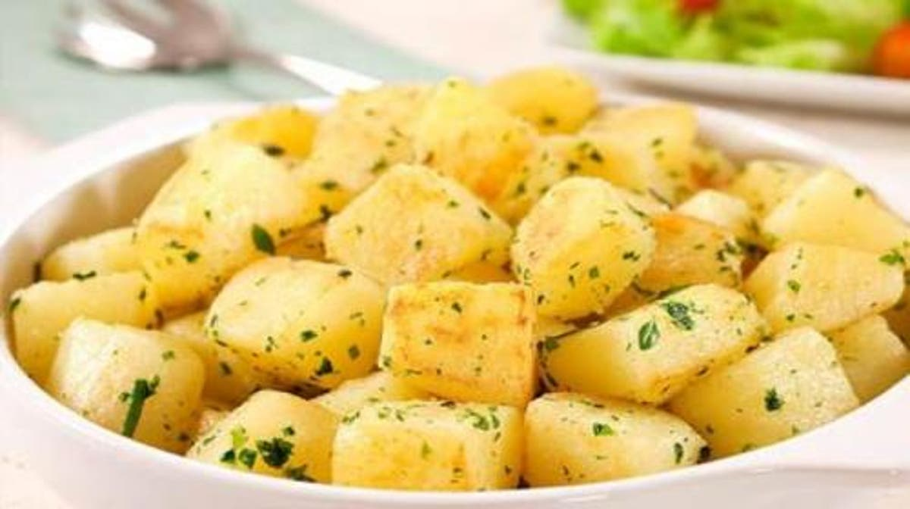
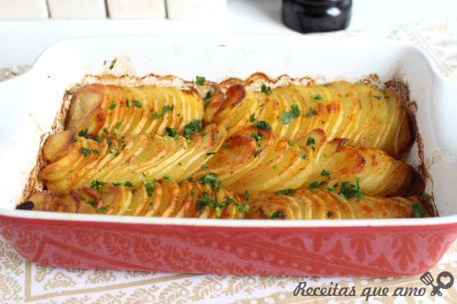
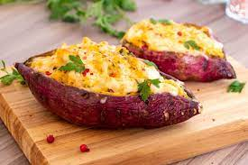
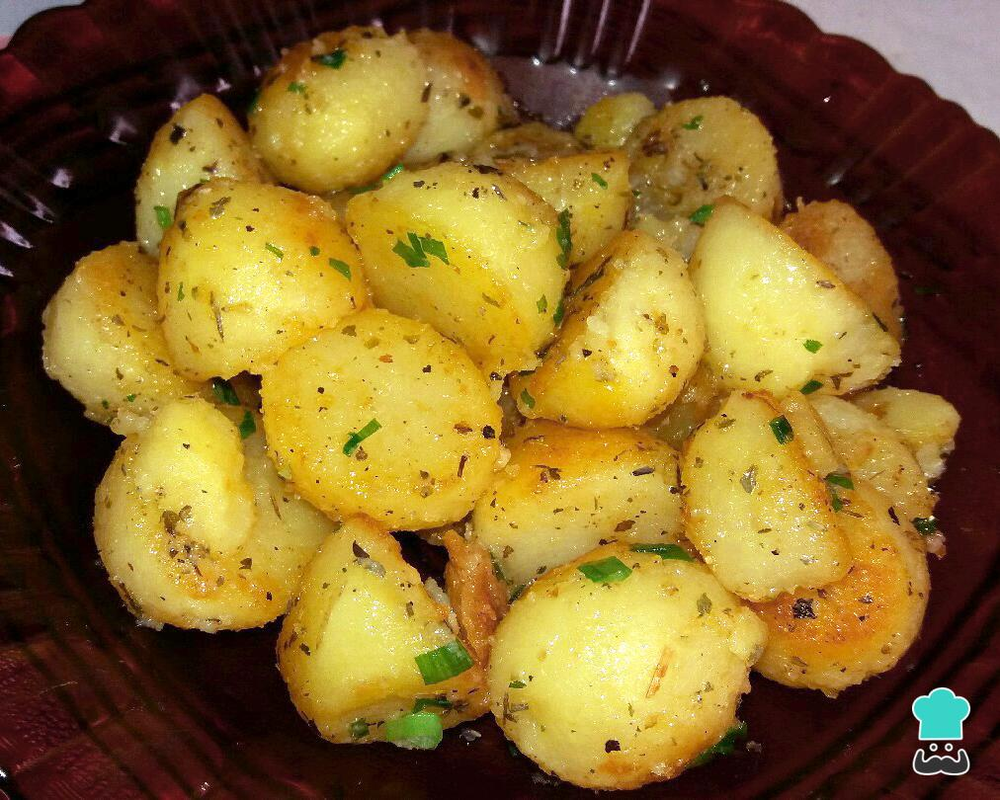
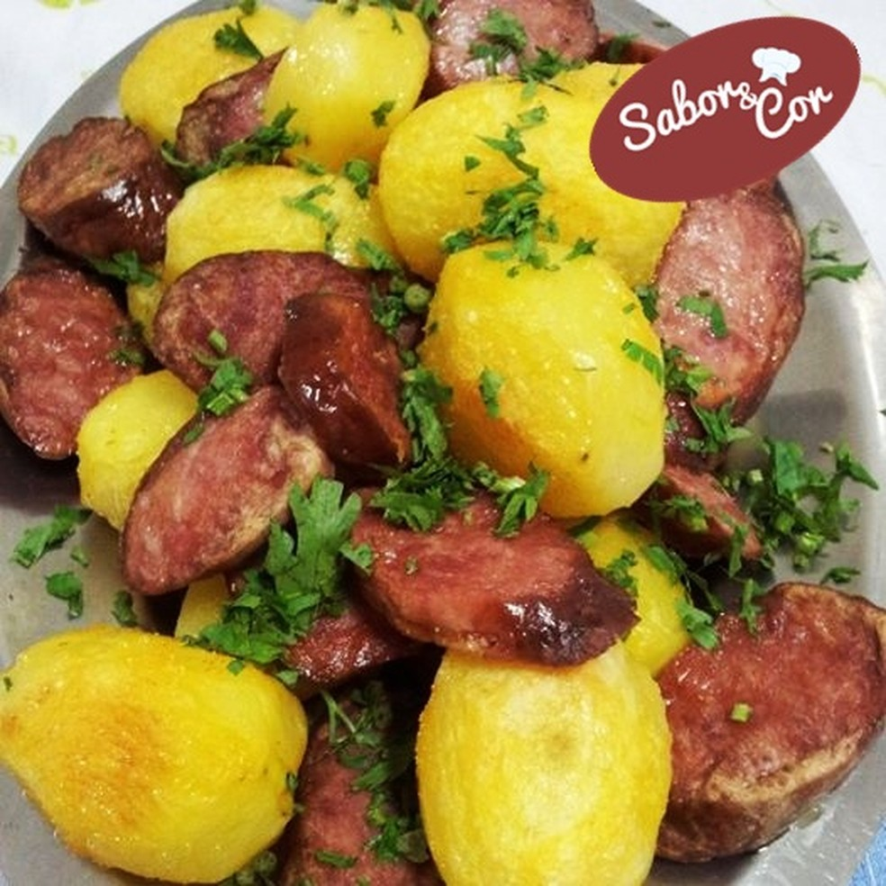
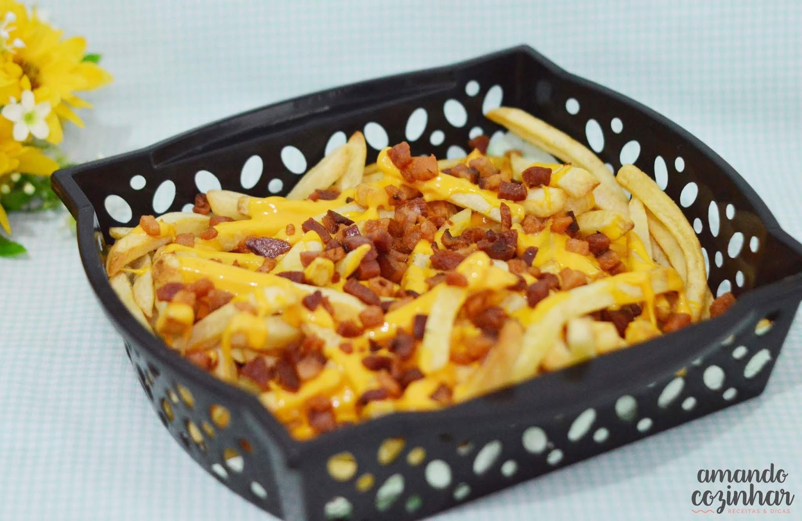

POTATOFLIX
Início
Receitas
Vídeos
Documentários
Batata recheada com Bacon e Queijo
Um delicioso prato, rápido e fácil e que todo mundo vai gostar
Veja como preparar
Mais informações sobre a receita





